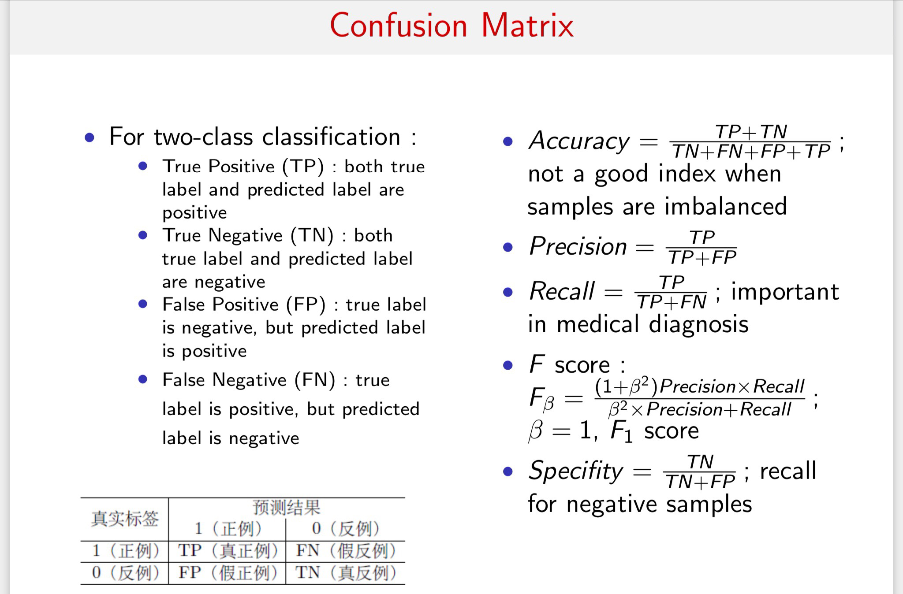

经典分类算法
贝叶斯方法体系
不同的贝叶斯方法的区别在于计算后验概率时的分子，也就是联合分布概率的计算。贝叶斯网络的联合分布可以根据网络图很直观地得到结果，具体可以学习一下概率图模型中的贝叶斯网络（与马尔可夫网络的区别就在于后者具有最大团属性，对应于马尔可夫性）。
- 朴素贝叶斯
- 假设所有特征是独立的，无相互作用，可直接通过先验概率去计算后验概率。
- 半朴素贝叶斯
- 适当考虑一部分属性间的相互依赖信息。
- 典型的是独依赖估计
- 贝叶斯网
- 也叫信念网（belief network）
- 借助有向无环图来刻画属性之间的依赖关系，使用条件概率表来描述属性的联合概率分布。
- 贝叶斯网络的大致原理是构造各维特征之间的依赖网络（通过某种基于信息论准则的学习过程构建），然后根据学习到的贝叶斯网络B（G，P）通过Gibbs采样来模拟类别概率。
KNN
最简单的一种分类思路，利用样本点周围样本的类别来做分类，唯一需要调整的参数就是所用邻居样本点的数目k。
另外，根据不同的数据特点确定距离度量也至关重要。
常见的距离度量
- Minkowski-distance
- Cosine similarity
- Jaccard similarity：类别向量常用的一种距离度量，具体可见数据预处理
- KL-divergence
k的选取
- 网格搜索
- 随机搜索
- 高斯优化
配合n-fold交叉验证选取合适的k。
决策树
分类使用的决策树根据不同的启发函数进行分枝，启发函数使用的一般都是信息论中的度量，比如信息增益、GINI不纯度的等等。
根据所用启发函数的区别，常用的三类决策树为：
- ID3: 使用信息增益
- C4.5: 使用信息增益比，解决ID3对于多取值特征的倾向性。
- CART：使用GINI不纯度
剪枝
预剪枝
在建树过程中，根据一些预定义的限制条件进行剪枝，比如树的最大深度、叶子结点的最少样本数、分枝后的增益等等。
要主要的是，预剪枝有欠拟合风险，虽然当前的划分会导测准确率降低但在之后的划分中准确率可能会有显著上升。
后剪枝
后剪枝是在建树完成之后，对完整的决策树进行剪枝，在实际使用中效果一般会优于预剪枝，当然也会更耗时。
其根据剪枝之后精度损失和复杂度做一个权衡，根据权衡标准选择是否剪枝。
后剪枝都会损失精度，但是为了提升模型的泛化性，我们也可以在接受一定损失的情况下去做剪枝。
比如代价复杂度剪枝CCP，思想就是看去掉之后的节点之后，模型损失的精度和精简的复杂度之间的权衡，找一个在一定精度损失的情况下，可精简复杂度最高的。
朴素贝叶斯分类器
核心是将要求的条件概率转换为右边容易求的三个概率，尤其是分子的式子（因为分母是固定的），将其最大化，即bayes分类模型。
然后，做一个很朴素的假设，假设X的取值是条件独立的，即：
这样的话，可以通过MLE（maximum liklihood estimate,极大似然估计）得到贝叶斯估计的分类结果，若为连续变量，则进行离散化，依旧使用上述方法：
SVM
基本思想：最大化类别之间的margin
算法推导思想：将最大化类别之间margin的目标函数使用拉格朗日方法进行转化，使用SMO算法（坐标上升法）对其对偶问题进行求解。
当数据线性可分时，我们直接使用线性SVM即可，否则可以通过核方法对其进行映射，得到高维空间的线性可分数据。
逻辑回归
直接对分类的概率进行建模，使用MLE进行模型参数的求解即可。
最后直接就可以通过自变量x得到分类y=k的概率。
z就是一个回归模型，但是回归的并不是概率，而是分类几率的对数，所谓几率就是二分类中两种分类概率的比值，如下所示：
分类模型的评估
在分类问题中，我们将数据进行如下划分：
precision
准确率，即所有分为positive的样本中，真正positive的比例。
recall
召回率，即所有真正的positive样本中，被正确分为positive的比例。
f1 score
准确率和召回率的调和平均数，兼顾二者的表现。
混淆矩阵

ROC和AUC
AUC：一个正例预测为正的概率值大于负例预测为正的概率。
表现在图像上就是ROC曲线下的面积。
图像上每一个点都对应一个阈值。随着阈值不断减小，TPR和FPR都不断增大，反之不断减小。
AUC和F1的区别
二者都对于recall有要求（在AUC中就是TPR），这一点是一致的。
但是AUC要尽量降低FPR，这要求模型偏向于保守，尽量不误报；
但F1要提高准确率，也就是希望不放过任何一个可能的结果。这便是二者的核心区别。
同时，AUC对不均衡样本并不是很敏感，但是F1很容易在不均衡样本下做出愚蠢的决定。
总之，AUC是一种较为稳健的评估方式，尤其是在数据失衡的情况下，f1会非常容易受到样本比例的影响，比如正样本占绝大多数时，可能一个愚蠢的模型会将所有的样本划分为正样本，也不会对f1造成多大的影响，但是AUC会敏感的察觉到这种愚蠢的模型。